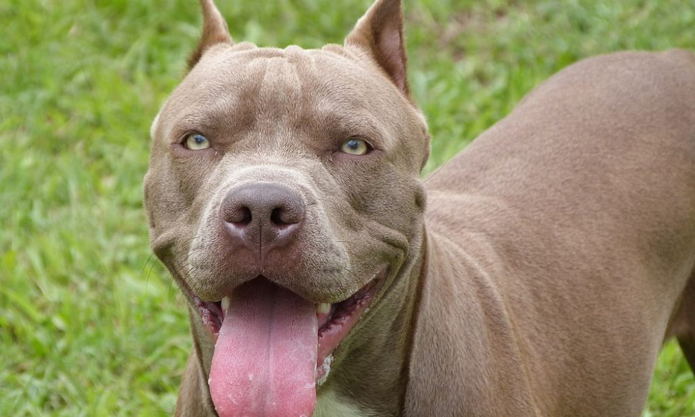

Manter seus animais de estimação limpos é essencial para a saúde e o bem-estar deles. Aqui estão algumas dicas práticas para garantir que seus amigos de quatro patas estejam sempre limpos e felizes.
.png)
Utilize shampoos específicos para pets que são suaves e adaptados ao tipo de pelo do seu animal. A frequência dos banhos depende da raça e das atividades do seu pet, mas, em geral, banhos a cada 4-6 semanas são adequados para a maioria dos cães. Para gatos, um banho ocasional pode ser necessário, especialmente se eles estiverem muito sujos ou tiverem problemas de pele.
Escolha uma escova apropriada para o tipo de pelo do seu pet. A escovação deve ser feita pelo menos uma vez por semana para cães de pelo curto, e de duas a três vezes por semana para cães de pelo longo. Gatos, especialmente os de pelo longo, também se beneficiam de escovações frequentes.
.jpg)
Verifique as orelhas do seu pet semanalmente para detectar sinais de cera, sujeira ou infecção. Assegure-se de cortar as garras regularmente para evitar que elas cresçam demais e causem dor.